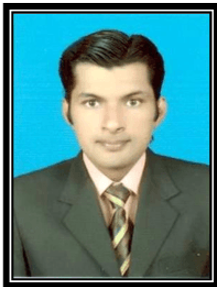

REHAN AHMAD KHAN
House #2224/73 ,yousaf-zai-lodge, gail muhalla chah-dhur-hatta
shalimar colony near toyata showroom,multan,pakistan.
(+92) 0614745398,03477022126
| Fathername: |
shamim ahmed khan |
| Email adress: |
rehankhna_mfdhiee@yahoo.com |
| nationality: |
pakistani |
| Domicile: |
multan/punjab |
| martial status: |
single |
| CNIC Number: |
36302-3398914-7 |
| religion: |
islam |

Career objective
To excel among the professionals. where i can utilize my skills withh strong
commitment and dedication for the progressive growth of the company .
Skill
- computer Literate ;proficiency in ms word,power point,front page
- excellent Languages skills;proficient G.w.Basic & c++
- web site Development ability
Education
2009-2011(B.tech.PASS)Bechlor of technology in Electrical
Technology (waiting for the result .)
IMperical college of technology & managment ,multan,pakisthan
2006-2009 (D.A.E) Diplaoma of associate Engineer in Electrical
technology obtaining 1
st Division(2762/3550)
swedish institute of technology(1st
.campus)multan,pakistan
2004-2006 Intermediate
govt.college multan ,pakistan
2004 matriculation
govt.comprehensive school mulltan,pakisthan.
professional experience
1. INTERNSHIP one year internship training in 132kv.Boson Road grid
station MUltan,pakisthan.
interpersonal skills
Highly developed inetre personal skills with an ability to work with multi cultural
good analytical and problem solving skills
self-confident and hardworking nature
References
will be furnished on demand